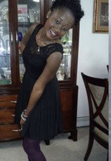

Meet the Committee
Service Sites
The Service Sites committee focuses on finding the sites in need for the day of service. We mail, call, and e-mail prospective sites in order to get proper contact information for the day of service, find out what service is needed, and make sure that it is meaningful for both the students and the sites. Throughout the summer, we contact the various sites in order to find service for all of volunteers at Fresh START.

Maame Kwarkye
|
Hello! My name is Maame Kwarkye. I am a sophomore from New York City majoring in Psychology (neuroscience) with Pre-Med requisites. I was a team leader last fall and I am excited to be apart of the planning team this year. I am apart of several student organizations on campus such as African Student Association, Global Medical Brigades, Student Philanthropic Council, just to name a few. If you have any questions, please feel free to contact me at mik5323@psu.edu.
|
Rebekah Hoffner
|
My name is Rebekah Hoffner and I am one of the Co-Directors of Service Sites for the 2013 FreshSTART Day of Service! I am a fourth year senior from Halifax, Pennsylvania. I am double majoring in Earth Science and Biology, and double minoring in Marine Science and Geography. I took part in FreshSTART as a freshman in the fall of 2009 and had an incredible experience. Here at University Park, I am a member of Women's Club Water Polo and UPUA Student Conduct Advisors. It is also my fourth year participating as a THON committee member. FreshSTART is an amazing opportunity to Get Rooted in service here at Penn State and into the future! Feel free to contact me at rxh5055@psu.edu with any questions or concerns!
|
|